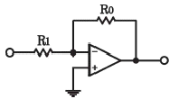
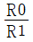
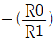
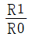
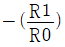
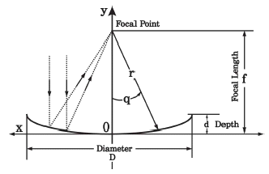
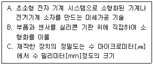
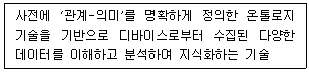
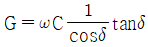
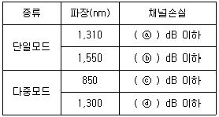

통신설비기능장 (2021-03-13 기출문제)
1과목: 임의 과목 구분(20문항)
1. 다음 중 전자교환방식의 통화로계 장치에 대한 구성요소로서 통화로에 접속하는데 직접적으로 관련이 없는 장치는?
- 통화로 장치
- 통화로 제어장치
- 라인 메모리 장치
- 주사 장치
(정답률: 76%)

2. 다음 중 아날로그 신호를 디지털 신호로 전송하기 위한 신호처리과정으로 볼 수 없는 것은?
- 표본화
- 정보화
- 양자화
- 부호화
(정답률: 77%)
3. 8위상 변·복조를 사용하는 모뎀의 데이터 신호 속도가 9600일 때, 변조 속도는 몇 [Baud]인가?
- 1200[Baud]
- 2400[Baud]
- 3200[Baud]
- 4800[Baud]
(정답률: 76%)
4. 다음 중 디지털 변조방식이 아닌 것은?
- ASK
- PSK
- QAM
- DSB
(정답률: 81%)
5. 실제로 전송할 데이터가 있는 단말장치에만 타임슬롯을 할당함으로써 전송효율을 높이는 특징을 갖는 방식은?
- 동기식TDM
- FDM
- 비동기식TDM
- WDM
(정답률: 83%)
6. 다음 중 다중화 방식에 해당하지 않는 것은?
- 공간분할 다중화
- 주파수분할 다중화
- 파장분할 다중화
- 채널분할 다중화
(정답률: 67%)
7. 다음 중 디지털 변조방식에서 반송파의 주파수를 변화시키는 FSK의 특징이 아닌 것은?
- 비동기검파를 이용하는 경우에는 FSK모뎀 구현이 매우 간단하다.
- FSK신호는 직교신호이어야 한다.
- 전송 점유대역폭이 커서 주파수 사용 효율이 떨어진다.
- 선형 변조이므로 비선형변조방식에 비해 신호분석이 어렵다.
(정답률: 67%)
8. RFC(Request For Comments) 무선 표준화 단계로 알맞은 것은?
- Internet Draft - Draft Standard - Internet Standard
- Internet Draft - Experimental - Internet Standard
- Proposed Standard - Draft Standard - Internet Standard
- Proposed Standard - Experimental - Internet Standard
(정답률: 78%)
9. 전송에러가 발생할 경우 수신측에서 송신측으로 손상된 데이터의 재전송을 요구하는 프로토콜은 무엇인가?
- ARQ
- 헤밍 코드
- CRQ
- 에러 정정 코드
(정답률: 81%)
10. 통신 속도가 4800[bit/sec]인 회선에 부호 오율은 50분간 전송 했을 때 오류 비트가 36[bit]였다면, 이 회선의 평균오율은?
- 2.5×10-7
- 7.5×10-7
- 2.5×10-6
- 7.5×10-6
(정답률: 62%)
11. 다음 중 FM송신기에 포함되는 회로는?
- 프리엠퍼시스 회로
- 위상편이 회로
- 스퀠치 회로
- 진폭제한기
(정답률: 79%)
12. GP(Ground Plane) 안테나의 지선 레이디얼(Radial)은 무슨 역할을 하는가?
- 접지(카운트 포이즈)
- 페이딩 방지
- 지향성 증가
- 혼신 방지
(정답률: 85%)
13. OP-Amp를 활용한 아래 신호 증폭 회로의 증폭도는 얼마인가?





(정답률: 82%)
14. 자유공간에서 송신출력이 동일한 조건에서 사용하는 전파의 파장이 2배 증가하면 수신전력은 몇 배가 되는가?
- 1/2
- 1/4
- 2
- 4
(정답률: 78%)
15. 안테나의 빔포밍(Beamforming)기술의 설명으로 옳지 않은 것은?
- 정밀한 위상 제어를 위해 수신 안테나 별로 정밀한 위상제어가필요하다.
- 공간적으로 멀티플렉싱을 가능하게 하여 공간 다중화를 수행한다.
- 원하는 방향으로 지향성을 높이는 공간적인 필터링을 한다.
- 빔포밍 이득으로는 어레이 이득과 간섭제거 이득이 있다.
(정답률: 61%)
16. 위성지구국에 사용되는 비선형 증폭기에 입력되는 신호의 주파수가 3.5[GHz], 4.5[GHz]일 때 출력 가능한 신호의 주파수가 아닌 것은?
- 1[GHz]
- 7[GHz]
- 8[GHz]
- 10[GHz]
(정답률: 75%)
17. 다음 그림은 지상국의 Solid Surface Span Aluminum Parabora형 안테나를 나타낸 것이다. 그림의 안테나 반사기(Dish)의 지름이 1[m], 깊이가 165[mm]일 때, 파라볼라형 위성 안테나 설계에서 반사기 컨버터를 설치할 초점길이(Focal Lenth)는 얼마인가?

- 378.7879[mm]
- 3.787879[mm]
- 37.87879[mm]
- 3787.879[mm]
(정답률: 74%)
18. 이동통신에서 상관대역폭(Coherence Bandwidth)과 가장 관련이 깊은 것은?
- 음영효과
- 지연확산
- 안테나 이득
- 도플러 주파수
(정답률: 75%)
19. 다음은 사물인터넷과 관련된 기술을 설명하고 있다. 어떤 기술에 대한 설명인가?

- Nano 기술
- MEMS 기술
- Open 기술
- Make 기술
(정답률: 69%)
20. 다음 정의가 의미하는 사물인터넷 플랫폼 기술은?

- 사물 가상화 기술
- 검색 기술
- 식별체계 기술
- 시맨틱 기술
(정답률: 72%)
2과목: 임의 과목 구분(20문항)
21. 응용 계층의 데이터를 물리계층의 전송 매체를 통하여 전송하고자 할 때, OSI 7 계층 구조에서 단위 프레임(Frame)이 만들어지는 계층은?
- 5 계층
- 4 계층
- 3 계층
- 2 계층
(정답률: 70%)
22. LAP-B(Link Access Procedure, Balanced)에 대한 설명 중 틀린 것은?
- 데이터링크 계층에서 전송제어 절차를 규정한다.
- 여러 개의 논리적 링크로 양단에서 다중화 채널을 구성할 수 있다.
- 프레임은 Flag, 주소, 제어, 데이터, FCS, Flag로 구성된다.
- X.25 패킷교환을 위해 개발된 점대점 데이터링크 접속용 프로토콜 표준이다.
(정답률: 56%)
23. UTP 케이블을 이용하여 기가비트(Gigabit) 이더넷(Ethernet)을 구현할 때 사용되는 표준규격은?
- IEEE 802.3u
- IEEE 802.3z
- IEEE 802.3ab
- IEEE 802.3ae
(정답률: 77%)
24. 외부환경에서 전원이 필요하지 않은 수동소자를 사용해 국사에서 원격노드(Remote Node)까지 연결되는 단일 광케이블을 분기시켜 가입자들에게 연결하는 방식은?
- Ethernet
- Access Point
- Active Optical Network
- Passive Optical Network
(정답률: 76%)
25. 13.56[MHz]의 대역을 사용하는 비접촉식 통신기술로 상대적으로 보안이 우수하고 가격이 저렴하여 스마트폰에 내장되어 교통카드, 신용카드, 멤버십카드, 쿠폰 등 다양한 분야에서 활용할 수 있는 RFID 기술은?
- Bluetooth
- NFC
- Wi-Fi
- Hot Spot
(정답률: 85%)
26. 정보통신시스템에서 데이터 위·변조를 할 수 없도록 하는 정보보호의 기능을 무엇이라 하는가?
- 인증
- 기밀성
- 부인방지
- 무결성
(정답률: 72%)
27. 유비쿼터스 네트워크에서 주변 상황 정보를 획득하고 전달하는 기반 기술은?
- 디바이스 기술
- 네트워크 접속 기술
- 센싱 기술
- 암호화 기술
(정답률: 80%)
28. 다음 중 소프트스위치(Softswitch)의 기능에 속하지 않는 것은?
- 호 연결 서비스
- 교환기 호 제어
- 망 내에서 호 라우팅 수행
- 응용프로그램 운용
(정답률: 70%)
29. 다음 중 IPv6에 대한 설명으로 맞지 않는 것은?
- 총 128bit로 구성된 주소체계이다.
- 2128만큼 주소 할당이 가능하다.
- 각 16bit 씩 6자리로 되어있다.
- 각 자리는 :(콜론)으로 구분한다.
(정답률: 72%)
30. 다음 암호화 원리 중 평문의 글자를 재배열하는 방법으로, 원문과 키를 가지고 있는 정보를 암호문 전체에 분산시키는 방법은?
- 대체
- 전치
- 대수화
- 혼합방식
(정답률: 70%)
31. 다음 중에서 트위스트 페어 케이블의 누설 콘덕턴스(G)는 무엇인가?
- G = ωCsinδ
- G = ωCtanδ
- G = ωCcosδ

(정답률: 73%)
32. UTP 케이블에서 선을 꼬아서 만드는 주된 이유는?
- 중계기 없이 먼 곳으로 신호를 전송하기 위하여
- 외부적 간섭과 누화 현상을 줄이기 위하여
- 케이블의 길이를 줄여 비용을 절감하기 위하여
- 유지보수 시 케이블 구분을 쉽게 하기 위하여
(정답률: 81%)
33. 전송선로 특성 임피던스가 50[Ω]이고, 부하저항이 200[Ω]일 때, 이 전송계의 전압 정재파비는 얼마인가?
- 1
- 2
- 3
- 4
(정답률: 79%)
34. 전송선로에서 임피던스가 정합 되었을 때의 조건은? (단, ZO는 입력 임피던스, ZS는 출력 임피던스이다.)
- ZO = ZS
- ZO ＞ ZS
- ZO ＜ ZS
- ZO ≠ ZS
(정답률: 75%)
35. 다음 중 광섬유의 고유손실에 속하는 것은?
- 굽힘 손실
- 흡수 손실
- 접속 손실
- 결합 손실
(정답률: 81%)
36. 다음 중 광케이블 모드의 종류가 아닌 것은?
- 계단형 단일모드
- 계단형 다중모드
- 언덕형 단일모드
- 언덕형 다중모드
(정답률: 76%)
37. 광통신시스템의 발광소자 LED(Laser Emitting Diode)에 대한 설명으로 틀린 것은?
- 반도체의 광출력 중 자연 방출현상을 이용한 발광소자이다.
- 시간적으로 위상 관계가 무질서한 Incoherent 광이다.
- 단색성이 우수하고 직진성과 응집성, 수명 등 LD보다 떨어진다.
- 대·중·소 용량으로 아날로그 통신 및 주로 장거리에 사용한다.
(정답률: 66%)
38. 광케이블 파이버의 한쪽에서 나타나는 파단점 검출과 전송손실 등의 산출 데이터를 그래프와 수치로 나타내는 측정기기는 무엇인가?
- OTDR
- 광섬유 아날라이저
- 광 파워메터
- 스펙트럼 분석기
(정답률: 83%)
39. 전송로의 입력신호 레벨이 -20[dBm] 이고, 출력신호 레벨이 -59[dBm]일 때 이 전송로의 손실은 얼마인가?
- 29[dB]
- 39[dB]
- 49[dB]
- 59[dB]
(정답률: 85%)
40. 다음 중 통신 선로에서 펄스 시험기로 측정할 수 있는 것은?
- 통신선로의 고장점 측정
- 펄스 주기 측정
- 레헤르선 파장계의 고장점 측정
- 유선통신선로에 진행하고 있는 주파수 측정
(정답률: 73%)
3과목: 임의 과목 구분(20문항)
41. 전원회로에서 무부하시 단자 전압이 52[V]이고, 정격부하시의 단자 전압이 50[V]라면 전압 변동률은 몇 [%]인가?
- 2[%]
- 4[%]
- 6[%]
- 8[%]
(정답률: 70%)
42. 맥동률이 2[%]인 정류 회로의 부하 양단의 평균 직류 전압이 100[V]이다. 교류분은 얼마나 포함되어 있는가?
- 2.0[V]
- 1.2[V]
- 0.24[V]
- 2.4[V]
(정답률: 66%)
43. 초고속 정보통신건물 인증에서 동(Twisted Pair Cable)선로의 구내 배선 성능 측정항목 및 기준으로 틀린 것은?
- 선번확인시험(와이어 맵)은 각 구간의 정확한 배선연결 여부를 확인하는 시험으로서 배선의 단선이나 뒤바뀜이 없어야 한다.
- 배선구간의 길이측정은 패치코드를 포함한 동선로 구간의 길이는 100[m]를 초과하지 말아야 한다.
- 전기적 특성 시험은 반사손실, 최대삽입손실, 누화손실, 전력합 누화손실 등의 항목에 적합하여야 한다.
- 측정하려는 구내배선 구간의 양단에서 패치코드를 사용하여 측정기와 접속한 후 구내배선 성능을 측정한다.
(정답률: 77%)
44. 다음 중 수신기의 감도 측정에 필요하지 않는 것은?
- 표준 신호 발생기
- 의사 안테나
- 진공관 전압계(VTVM)
- 안테나 전류계
(정답률: 63%)
45. 광케이블의 접속손실을 후방산란법으로 측정할 때 필요한 장비로 가장 적합한 것은?
- 광원(LS)
- 광전력계(PM)
- 광분산측정기(ODA)
- 광펄스시험기(OTDR)
(정답률: 84%)
46. 다음은 방송통신을 통한 국민의 복리 향상과 방송통신의 원활한 발전을 위하여 방송통신기본계획을 수립하고 이를 공고하여야 할 사항이다. 적합하지 않은 것은?
- 방송통신기술의 개발과 생산 및 수출에 관한 사항
- 방송통신설비 및 방송통신에 이용되는 유·무선 망에 관한 사항
- 방송통신의 보편적 서비스 제공 및 공공성 확보에 관한 사항
- 방송통신의 남북협력 및 국제협력에 관한 사항
(정답률: 74%)
47. 다음 중 방송통신설비의 기술기준에 관한 용어의 정의가 틀린 것은?
- “국선”이란 사업자의 교환설비로부터 이용자방송통신설비의 최초 단자에 이르기까지의 사이에 구성되는 회선을 말한다.
- “이동통신구내선로설비”란 사업자로부터 이동통신서비스 및 휴대인터넷서비스 등을 제공받기 위하여 건축물을 건축주가 설치·관리하는 설비를 말한다.
- “전력선통신”이란 전력공급선을 매체로 이용하여 행하는 통신을 말한다.
- “구내통신선로설비”란 방송통신망에 접속되는 단말기기 및 그 부속설비를 말한다.
(정답률: 67%)
48. 다음 중 정보통신공사업자 외의 자가 시공할 수 있는 경미한 공사의 범위가 아닌 것은?
- 간이무선국·아마추어국 및 실험국의 무선설비설치공사
- 연면적 1천 제곱미터 이하의 건축물의 자가유선방송설비 ·구내방송설비 및 폐쇄회로텔레비젼의 설비공사
- 건축물에 설치되는 10회선 이하의 구내통신선로 설비공사
- 라우터 또는 허브의 증설을 수반하지 아니하는 5회선 이하의 근거리통신망(LAN)선로의 증설공사
(정답률: 61%)
49. 다음 중 용역업자가 해당 공사 전반에 관한 감리업무를 총괄하는 자를 배치하는 기준으로 잘못된 것은?
- 총공사금액 10억원 미만의 공사 : 초급감리원 이상의 감리원
- 총공사금액 30억원 이상 70억원 미만인 공사 : 고급감리원 이상의 감리원
- 총공사금액 70억원 이상 100억원 미만인 공사 : 특급감리원
- 총공사금액 100억원 이상 공사 : 특급감리원(기술사자격을 가진 자로 한정한다.)
(정답률: 79%)
50. 주거용건축물의 국선단자 함에서 세대 내 인출구까지 꼬임케이블을 배선할 경우 구내배선 설비의 링크성능은 얼마 이상의 전송특성이 유지되도록 하여야 하는가?
- 100[MHz] 이상
- 120[MHz] 이상
- 140[MHz] 이상
- 160[MHz] 이상
(정답률: 72%)
51. 공동주택 및 업무용 건축물에 설치하는 구내배선 광섬유 케이블의 링크성능 기준에 대한 채널 손실값으로 틀린 것은?

- ⓐ : 7
- ⓑ : 8
- ⓒ : 13
- ⓓ : 9
(정답률: 61%)
52. 다음 중 지진대책을 세워야 하는 방송통신설비의 범위에 해당되지 않는 것은?
- 통신국사
- 가공통신선
- 통신장비
- 전원설비 및 부대설비
(정답률: 74%)
53. 다음 중 정보통신공사 감리에서 엔지니어링 활동에 포함되지 않는 것은?
- 설비의 설계
- 설비의 시공
- 연구 활동
- 공사의 사업관리
(정답률: 57%)
54. 다음 중 정보통신설계의 기본방향을 잘못 설명한 것은?
- 건축물의 활용 목적, 이용자의 생활환경 및 사무환경에 맞도록 설계한다.
- 건축 비용과 유지관리, 개보수 등 운용경비를 포함한 경제적 측면을 고려한다.
- 타통신과의 방해, 전자파 간섭 등 다양한 요소에 대한 대책도 고려한다.
- 효율적 예산 집행을 위해 정보통신설비의 새로운 기능 및 성능향상, 시설확장 등은 고려하지 않는다.
(정답률: 78%)
55. 다음 중 정보통신 설계 진행단계로 옳은 것은?
- 기본구상 - 기본계획 - 기본설계 - 실시설계
- 기본계획 - 기본구상 - 기본설계 – 실시설계
- 기본구상 - 기본계획 - 실시설계 - 기본설계
- 기본계획 - 기본구상 - 실시설계 - 기본설계
(정답률: 66%)
56. 샘플의 채취간격이 공정의 변화하는 품질의 주기성보다 긴 경우에 사용하는 샘플링검사는?
- 취락샘플링검사
- 계통샘플링검사
- 2단계샘플링검사
- 단순랜덤샘플링검사
(정답률: 59%)
57. 샘플링 검사 목적에 의한 분류 중 랜덤샘플링 검사 방법에 해당되는 것은?
- 층별샘플링검사
- 2단계샘플링검사
- 취락샘플링검사
- 계통샘플링검사
(정답률: 56%)
58. 검사하는 시료의 면적이나 길이 등이 일정하지 않은 경우에 사용하는 관리도는?
- C관리도
- X관리도
- U관리도
- X-R관리도
(정답률: 71%)
59. LOT에 대한 설명 중 틀린 것은?
- LOT의 의미는 단위생산수량으로서 여러 개의 수량을 한 묶음이나 한 단위로 하여 생산이 이루어지는 경우의 단위이다.
- LOT의 수는 일정한 제조회수를 표시하는 개념이다.
- LOT의 종류에는 제조명령 LOT도 있다.
- LOT의 수를 예정생산 목표량으로 나눈 것이 LOT의 크기이다.
(정답률: 74%)
60. 의사결정을 위한 비용 검토에서 과거에 이미 지출되어서 되돌릴 수 없는 비용으로 현재애 어떤 결정을 내리더라도 회복될 수 없으므로 지금의 의사결정이나 분석에서 배제되어야 할 비용을 뜻하는 용어는?
- 고정비용
- 변동비용
- 기회비용
- 매몰비용
(정답률: 75%)